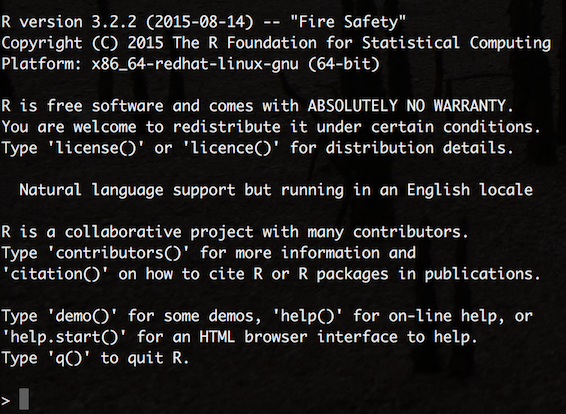
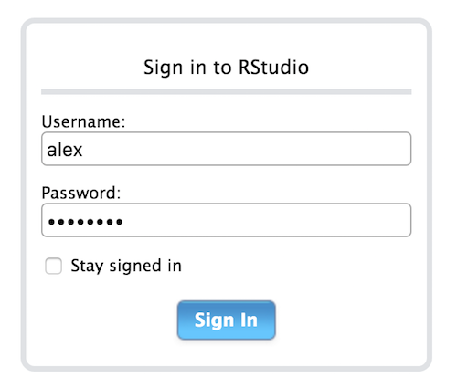
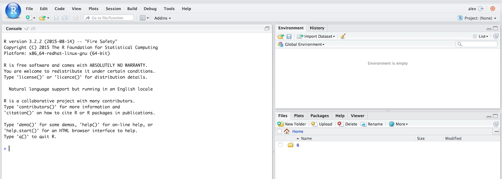

Building a Data Science Platform for R&D, Part 3 - R, R Studio Server, SparkR & Sparklyr
Posted on Mon 22 August 2016 in data-science

Part 1 and Part 2 of this series dealt with setting up AWS, loading data into S3, deploying a Spark cluster and using it to access our data. In this part we will deploy R and R Studio Server to our Spark cluster’s master node and use it to serve my favorite R IDE: R Studio. We will then install and configure both the Sparklyr and [SparkR][sparkR] packages for connecting and interacting with Spark and our data. After this, we will be on our way to interacting with and computing on large-scale data as if it were sitting on our laptops.
Installing R
Our first task is to install R onto our master node. Start by SSH-ing into the master node using the steps described in Part 2. Then execute the following commands in the following order:
$ sudo yum update- update all the packages on Amazon Linux machine imagine to the latest ones in the Amazon Linux’s repository;$ sudo yum install R- install R and all of its dependencies;$ sudo yum install libcurl libcurl-devel- ensure that Curl is installed (a dependency for thehttrandcurlR packages used to install other R packages); and,$ sudo yum install openssl openssl-devel- ensure that OpenSSL is installed (another dependency for the httr R package).
If everything has worked as intended, then executing $ R should present you with R on the command line:

Installing R Studio Server
Installing R Studio on the same local network as the Spark cluster that we want to connect to - in our case directly on the master node - is the recommended approach for using R Studio with a remote Spark Cluster. Using a local version of R Studio to connect to a remote Spark cluster is prone to the same networking issues as trying to use the Spark shell remotely in client-mode (see part 2).
First of all we need the URL for the latest version of R Studio Server. Preview versions can be found here while stable releases can be found here. At the time of writing Sparklyr integration is a preview feature so I’m using the latest preview version of R Studio Server for 64bit RedHat/CentOS (should this fail at any point, then revert back to the latest stable release as all of the scripts used in this post will still run). Picking-up where we left-off in the master node’s terminal window, execute the following commands,
$ wget https://s3.amazonaws.com/rstudio-dailybuilds/rstudio-server-rhel-0.99.1289-i686.rpm
$ sudo yum install --nogpgcheck rstudio-server-rhel-0.99.1289-i686.rpm
Next, we need to assign a password to our ec2-user so that they can login to R Studio as well,
$ sudo passwd ec2-user
If we wanted to create additional users (with their own R Studio workspaces and local R package repositories), we would execute,
$ sudo useradd alex
$ sudo passwd alex
Because we have installed Spark in our ec2-user’s home directory, other users will not be able to access it. To get around this problem (if we want to have multiple users working on the platform), we need a local copy of Spark available to everyone. A sensible place to store this is in /usr/local/lib and we can make a copy of our Spark directory here as follows:
$ cd /home/ec2-user
$ sudo cp -r spark /usr/local/lib
Now check that everything works as expected by opening your browser and heading to http://master_nodes_public_ip_address:8787 where you should be greeted with the R Studio login page:

Enter a username and password and then we should be ready to go:

Finally, on R Studio’s command line run,
> install.packages("devtools")
to install the devtools R package that will allow us to install packages directly from GitHub repositories (as well as many other things). If OpenSSL and Curl were installed correctly in the above steps, then this should take under a minute.
Connect to Spark with Sparklyr
Sparklyr is an extensible R API for Spark from the people at R Studio- an alternative to the SparkR package that ships with Spark as standard. In particular, it provides a ‘back end’ for the powerful dplyr data manipulation package that lets you manipulate Spark DataFrames using the same package and functions that I would use to manipulate native R data frames on my laptop.
Sparklyr is still in it’s infancy and is not yet available on the CRAN archives. As such, it needs to be installed directly from its GitHub repo, which from within R Studio is done by executing,
> devtools::install_github("rstudio/sparklyr")
This will take a few minutes as there are a lot of dependencies that need to be built from source. Once this is finished create a new script and copy the following code for testing Sparklyr, its ability to connect to our Spark cluster and our S3 data:
# set system variables for access to S3 using older "s3n:" protocol ----
# Sys.setenv(AWS_ACCESS_KEY_ID="AKIAJL4EWJCQ3R86DWAA")
# Sys.setenv(AWS_SECRET_ACCESS_KEY="nVZJQtKj6ODDy+t253OZJWZLEo2gaEoFAYjH1pEf")
# load packages ----
library(sparklyr)
library(dplyr)
# add packages to Spark config ----
config <- spark_config()
config$sparklyr.defaultPackages[[3]] <- "org.apache.hadoop:hadoop-aws:2.7.2"
config$sparklyr.defaultPackages
# [1] "com.databricks:spark-csv_2.11:1.3.0" "com.amazonaws:aws-java-sdk-pom:1.10.34" "org.apache.hadoop:hadoop-aws:2.7.2"
# connect to Spark cluster ----
sc <- spark_connect(master = "spark://ip-172-31-11-216:7077",
spark_home = "/usr/local/lib/spark",
config = config)
# copy the local iris dataset to Spark ----
iris_tbl <- copy_to(sc, iris)
head(iris_tbl)
# Sepal_Length Sepal_Width Petal_Length Petal_Width Species
# <dbl> <dbl> <dbl> <dbl> <chr>
# 5.1 3.5 1.4 0.2 "setosa"
# 4.9 3.0 1.4 0.2 "setosa"
# 4.7 3.2 1.3 0.2 "setosa"
# 4.6 3.1 1.5 0.2 "setosa"
# 5.0 3.6 1.4 0.2 "setosa"
# 5.4 3.9 1.7 0.4 "setosa"
# load S3 file into Spark's using the "s3a:" protocol ----
test <- spark_read_csv(sc, "test", "s3a://adhoc.analytics.data/README.md")
test
# Source: query [?? x 1]
# Database: spark connection master=spark://ip-172-31-11-216:7077 app=sparklyr local=FALSE
#
# _Apache_Spark
# <chr>
# Spark is a fast and general cluster computing system for Big Data. It provides
# high-level APIs in Scala
# supports general computation graphs for data analysis. It also supports a
# rich set of higher-level tools including Spark SQL for SQL and DataFrames
# MLlib for machine learning
# and Spark Streaming for stream processing.
# <http://spark.apache.org/>
# ## Online Documentation
# You can find the latest Spark documentation
# guide
# # ... with more rows
# disconnect ----
spark_disconnect_all()
Execute line-by-line and check the key outputs with those commented-out in the above script. Sparklyr is changing rapidly at the moment - for the latest documentation and information on: how to use it with the dplyr package, how to leverage Spark machine learning libraries and how to extend Sparklyr itself, head over to the Sparklyr web site hosted by R Studio.
Connect to Spark with SparkR
SparkR is shipped with Spark and as such there is no external installation process that we’re required to follow. It does, however, require R to be installed on every node in the cluster. This can be achieved by SSH-ing into every node in our cluster and repeating the above R installation steps, or experimenting with Flintrock’s run-command command that will automatically execute the same command on every node in the cluster, such as,
$ ./flintrock run-command the_name_of_your_cluster 'sudo yum install -y R'
To enable SparkR to be used via R Studio and demonstrate the same connectivity as we did above for Sparklyr, create a new script for the following code:
# set system variables ----
# - location of Spark on master node;
# - add sparkR package directory to the list of path to look for R packages
Sys.setenv(SPARK_HOME="/home/ec2-user/spark")
.libPaths(c(file.path(Sys.getenv("SPARK_HOME"), "R", "lib"), .libPaths()))
# load packages ----
library(SparkR)
# connect to Spark cluster ----
# check your_public_ip_address:8080 to get the local network address of your master node
sc <- sparkR.session(master = "spark://ip-172-31-11-216:7077",
sparkPackages = c("com.databricks:spark-csv_2.11:1.3.0",
"com.amazonaws:aws-java-sdk-pom:1.10.34",
"org.apache.hadoop:hadoop-aws:2.7.2"))
# copy the local iris dataset to Spark ----
iris_tbl <- createDataFrame(iris)
head(iris_tbl)
# Sepal_Length Sepal_Width Petal_Length Petal_Width Species
# 5.1 3.5 1.4 0.2 setosa
# 4.9 3.0 1.4 0.2 setosa
# 4.7 3.2 1.3 0.2 setosa
# 4.6 3.1 1.5 0.2 setosa
# 5.0 3.6 1.4 0.2 setosa
# 5.4 3.9 1.7 0.4 setosa
# load S3 file into Spark's using the "s3a:" protocol ----
test <- read.text("s3a://adhoc.analytics.data/README.md")
head(collect(test))
# value
# 1 # Apache Spark
# 2
# 3 Spark is a fast and general cluster computing system for Big Data. It provides
# 4 high-level APIs in Scala, Java, Python, and R, and an optimized engine that
# 5 supports general computation graphs for data analysis. It also supports a
# 6 rich set of higher-level tools including Spark SQL for SQL and DataFrames,
# close connection
sparkR.session.stop()
Again, execute line-by-line and check the key outputs with those commented-out in the above script. Use the sparkR programming guide and the sparkR API documentation for more information on the available functions.
We have nearly met all of the aims set-out at the beginning of this series of posts. All that remains now is to install Apache Zeppelin so we can interact with Spark using Scala in the same way we can now interact with it using R.